Differences in Opportunity
ECON 1101 · Autumn 2026
Sources and attribution (1 of 2)
Any use of these materials should cite those original sources.
Papers discussed in this deck:
- Chetty, Hendren, Jones, and Porter (2020). “Race and Economic Opportunity in the United States: An Intergenerational Perspective.” Quarterly Journal of Economics 135(2): 711–783.
- Chetty, Hendren, Kline, and Saez (2014). “Where Is the Land of Opportunity? The Geography of Intergenerational Mobility in the United States.” Quarterly Journal of Economics 129(4): 1553–1623.
- Becker and Tomes (1979). “An Equilibrium Theory of the Distribution of Income and Intergenerational Mobility.” Journal of Political Economy 87(6): 1153–1189.
- Heller, Shah, Guryan, Ludwig, Mullainathan, and Pollack (2017). “Thinking, Fast and Slow? Some Field Experiments to Reduce Crime and Dropout in Chicago.” Quarterly Journal of Economics 132(1): 1–54.
- Devine, Forscher, Austin, and Cox (2012). “Long-Term Reduction in Implicit Race Bias: A Prejudice Habit-Breaking Intervention.” Journal of Experimental Social Psychology 48(6): 1267–1278.
- Finlay, Mueller-Smith, and Street (2023). “Children’s Indirect Exposure to the U.S. Justice System: Evidence from Longitudinal Links between Survey and Administrative Data.” Quarterly Journal of Economics 138(4): 2181–2224.
- Kleinberg, Lakkaraju, Leskovec, Ludwig, and Mullainathan (2018). “Human Decisions and Machine Predictions.” Quarterly Journal of Economics 133(1): 237–293.
Sources and attribution (2 of 2)
Papers discussed in this deck (continued):
- Bertrand and Mullainathan (2004). “Are Emily and Greg More Employable Than Lakisha and Jamal? A Field Experiment on Labor Market Discrimination.” American Economic Review 94(4): 991–1013.
- Edelman, Luca, and Svirsky (2017). “Racial Discrimination in the Sharing Economy: Evidence from a Field Experiment.” American Economic Journal: Applied Economics 9(2): 1–22.
- Danziger, Levav, and Avnaim-Pesso (2011). “Extraneous Factors in Judicial Decisions.” Proceedings of the National Academy of Sciences 108(17): 6889–6892.
- Ginsberg, Mohebbi, Patel, Brammer, Smolinski, and Brilliant (2009). “Detecting Influenza Epidemics Using Search Engine Query Data.” Nature 457(7232): 1012–1014.
- Lazer, Kennedy, King, and Vespignani (2014). “The Parable of Google Flu: Traps in Big Data Analysis.” Science 343(6176): 1203–1205.
- Wing, Bradford, Carroll, and Hollingsworth (2020). “Association of State Marijuana Legalization Policies for Medical and Recreational Use with Vaping-Associated Lung Disease.” JAMA Network Open 3(4): e202187.
- Kleinberg, Ludwig, Mullainathan, and Obermeyer (2015). “Prediction Policy Problems.” American Economic Review 105(5): 491–495.
Much of the material in these notes is adapted from other sources — in particular Raj Chetty’s course “Using Big Data to Solve Economic and Social Problems” (used with permission, along with André Kurmann’s Drexel adaptation).
Other sources: Raj Chetty’s Opportunity Insights course slides and lecture notes; the Opportunity Atlas and Opportunity Insights commuting-zone mobility maps; American Community Survey 2016 median household income estimates; the Criminal Justice Administrative Records System (CJARS), built by Finlay and Mueller-Smith at the University of Michigan with the U.S. Census Bureau; CDC influenza surveillance (ILINet) and CDC/MMWR EVALI case and death counts; published Google Flu Trends estimates; and Columbus Dispatch reporting on Ohio EVALI cases (November 2019).
In this unit
Differences in economic opportunity
Exposure to the U.S. justice system
Prediction, overfitting, and the limits of big data
Differences in economic opportunity
Today’s question
Why have Black–white income gaps persisted for generations — and what would it actually take to close them?
- New lens for this Part: differences in opportunity across groups, not just places
- Core source: Chetty, Hendren, Jones, and Porter (2020) — your reading for today
- New method: dynamic models and steady states
Where we’re headed
- The gaps today, and the classic theories for them
- A thought experiment: what if mobility were race-invariant?
- What the data show instead: race-specific mobility and steady states
- The gap is a story about boys, not girls
- Four key results across neighborhoods
- What does — and does not — explain the gap
The gaps today
Median household income by race and ethnicity, 2016
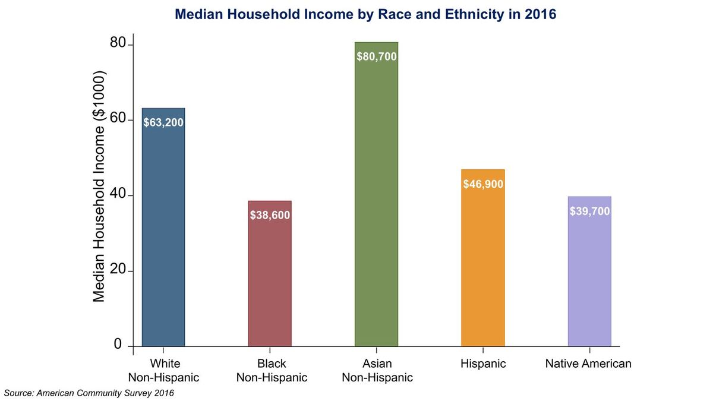
Source: American Community Survey 2016
Income differences across racial and ethnic groups
| Group | Median household income, 2016 |
|---|---|
| Asian (non-Hispanic) | $80,700 |
| White (non-Hispanic) | $63,200 |
| Hispanic | $46,900 |
| Native American | $39,700 |
| Black (non-Hispanic) | $38,600 |
- Source: American Community Survey 2016
- These gaps have persisted for generations — the question is why
Three families of theories
- Family-level factors — parental income and wealth, parental education, family structure
- Structural features of the environment — segregation and neighborhoods (Wilson 1987), school quality, discrimination in labor markets and criminal justice
- Cultural factors and social norms — identity, aspirations, role models
- Decades of work in each row — but mostly comparing people within a single generation
Today’s lens: an intergenerational perspective
- Most prior work: snapshot disparities in one generation
- We instead follow incomes across generations — the dynamics
- Why it pays off:
- Tells us which disparities will persist in the long run
- Isolates the factors that drive persistent gaps
- Method for today: dynamics of income and steady states (Chetty et al. 2020)
A thought experiment: race-invariant mobility
The tool we already have: the rank–rank line
- Recall from Class 2: mean child income rank vs. parent income rank
- Nationally the line is nearly straight with slope 0.35 (Chetty et al. 2014)
- Kids of the richest parents end up ~35 percentiles above kids of the poorest parents, on average
- Suppose — hypothetically — Black and white children faced this same line. What happens to the gap?
The national mobility line
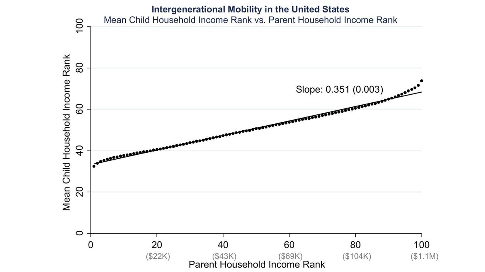
Source: Chetty, Hendren, Jones, and Porter (2020)
Step 1: where the parents start
- Mean parent rank, Black children: 32.7
- Mean parent rank, white children: 57.9
- Gap in the parents’ generation: 25.2 percentiles
- Now use the mobility line as a prediction machine: read off where each group’s children land
Where the parents start
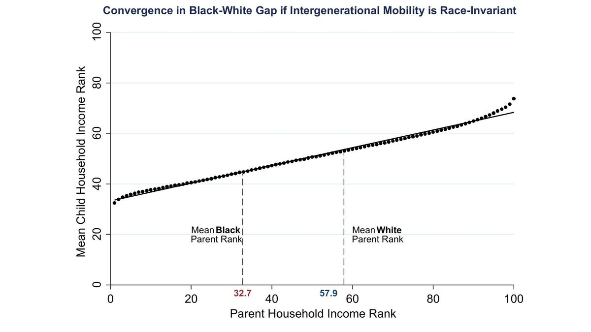
Where the parents start
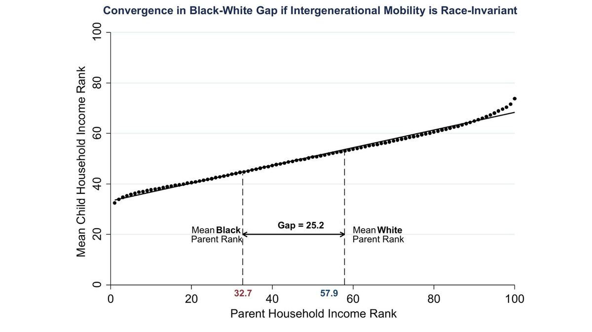
Step 2: read off the children
- Children of the average Black family (rank 32.7) → rank 44.8
- Children of the average white family (rank 57.9) → rank 53.6
- Predicted gap in the next generation: 8.8 percentiles
- One generation, and the gap falls from 25.2 to 8.8 — why?
- Slope < 1 means kids regress toward the middle: upward mobility at the bottom, downward mobility at the top
Reading the children off the line
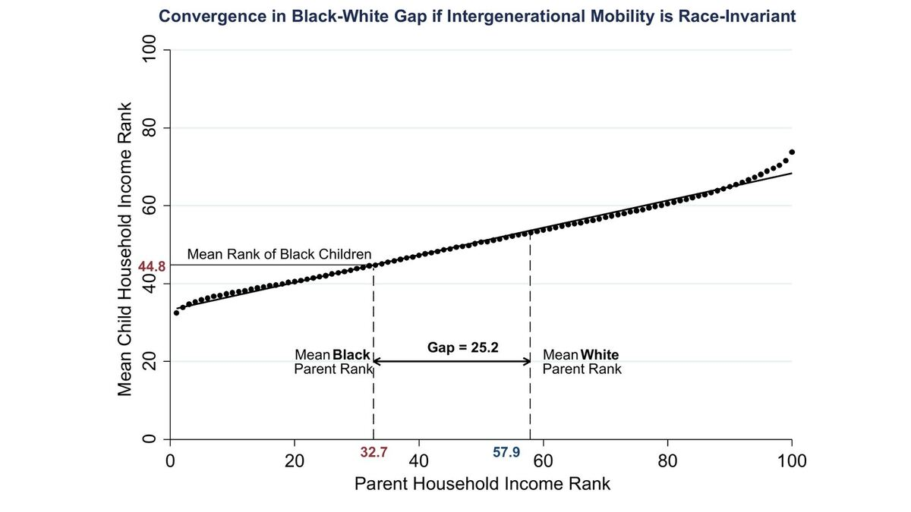
Reading the children off the line
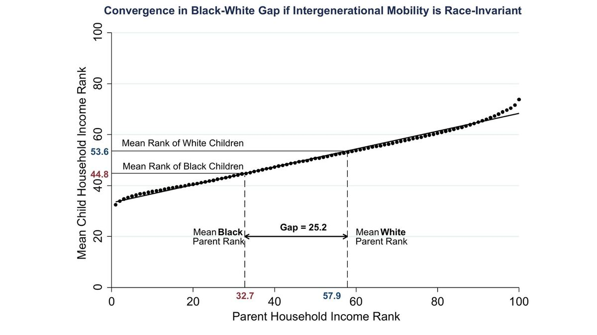
Reading the children off the line
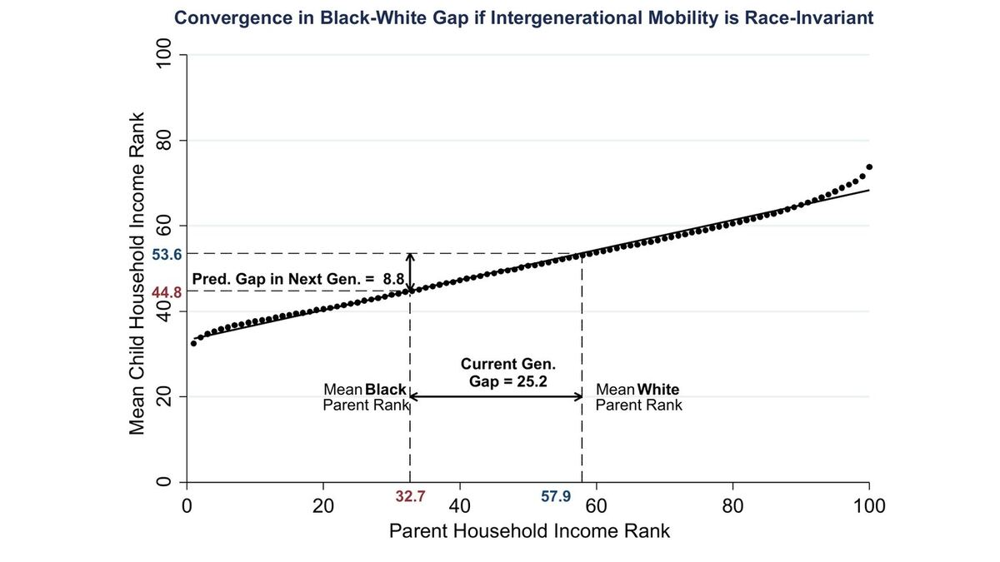
Now iterate: those children become the parents
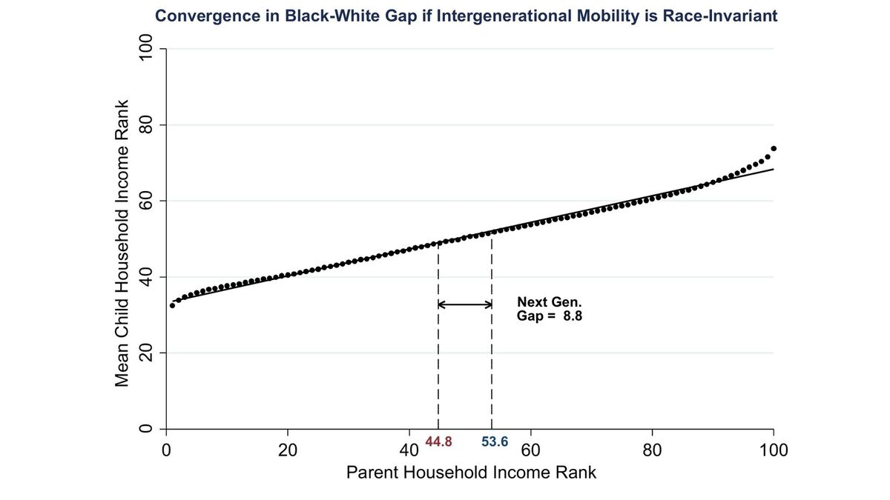
TopHat: How big is the gap in generation 2?
The gap shrinks by the slope (0.35) each generation: 25.2 → 8.8 → ?
- A: about 6 percentiles
- B: about 3 percentiles
- C: about 9 percentiles
- D: 0 — it disappears entirely
Generation 2: the gap falls to 3.1
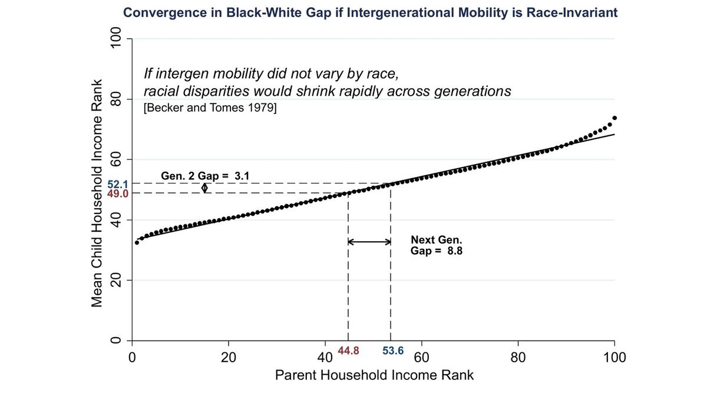
Exponential convergence
- Each generation: new gap = slope × old gap = 0.35 × 25.2 ≈ 8.8
- Generation 2: 0.35 × 8.8 ≈ 3.1 percentiles (52.1 vs. 49.0)
- If mobility did not vary by race, racial disparities would shrink rapidly — at an exponential rate across generations (Becker and Tomes 1979)
- Centuries of persistent gaps are therefore a puzzle… unless mobility itself differs by race
What the data show
Mobility is not race-invariant
- Plot the rank–rank line separately by race — the lines do not coincide (Chetty et al. 2020)
- Conditional on parent income, Black children land lower than white children at every parent rank:
- at p25: 12.6 percentiles lower
- at p75: 15.7 percentiles lower
- at p100: 12.4 percentiles lower
The lines do not coincide
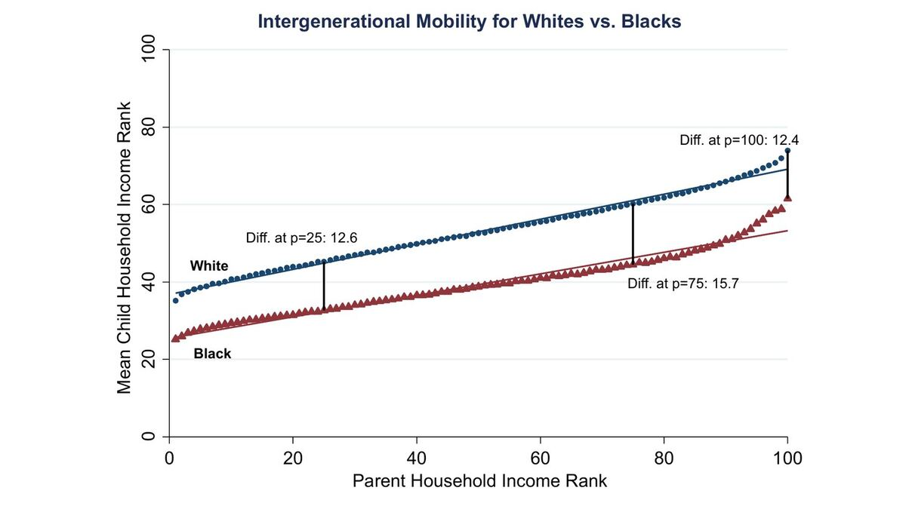
Source: Chetty, Hendren, Jones, and Porter (2020)
Lower up, faster down
- Black children have lower upward mobility from the bottom and higher downward mobility from the top
- Black children raised in the highest-income families still end up with substantially lower adult incomes than white children from similarly affluent families
- A Black child from a top-quintile family has a high chance of falling to the bottom fifth; a white child from a top-quintile family tends to stay near the top
Method spotlight: dynamic models and steady states
- A dynamic model tracks a variable generation by generation: next generation’s rank = f(this generation’s rank)
- A steady state is the resting point: where the next generation equals the current one — the system stops moving
- On our chart: where the mobility line crosses the 45-degree line
- If the slope is below 1, the system converges to that point from any starting rank
Finding each group’s steady state
- Whites’ mobility line crosses the 45-degree line at rank 54.4
- Blacks’ mobility line crosses it at rank 35.2
- Steady-state gap: 19.2 percentiles
- Compare: the gap we observe today is about 21 percentiles
Where each line crosses the 45-degree line
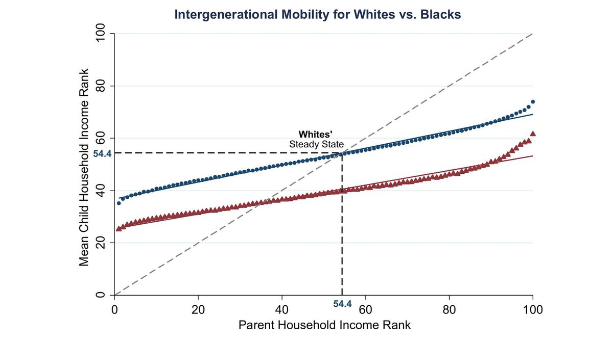
Where each line crosses the 45-degree line
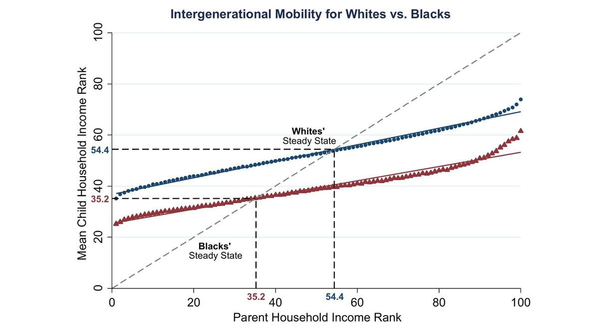
Where each line crosses the 45-degree line
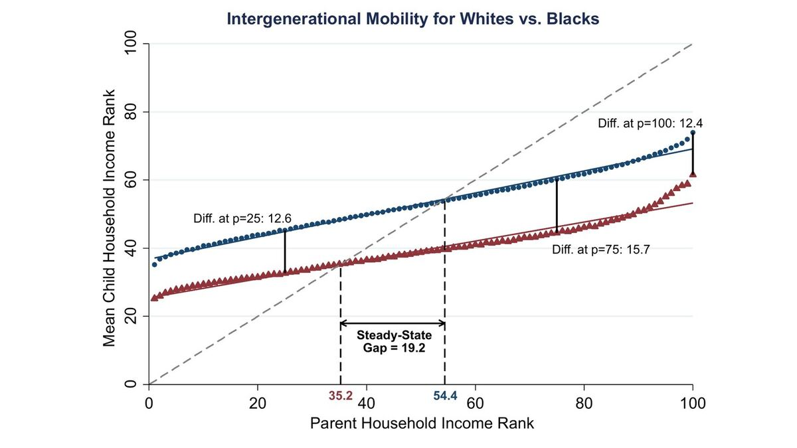
Where each line crosses the 45-degree line
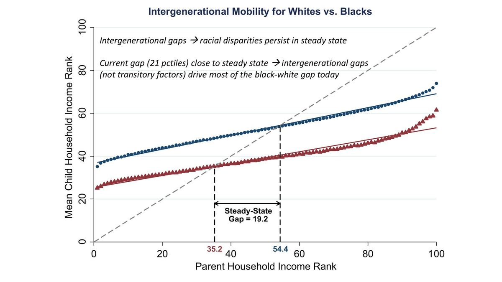
The gap we see today is (almost) the long-run gap
- Today’s gap ≈ steady-state gap → Black Americans are close to their steady state
- So the Black–white gap is driven by intergenerational gaps in mobility, not transitory factors that will fade on their own
- Waiting will not close this gap
- To change the long run, you must change rates of mobility — one-time income transfers shift one generation, then the dynamics pull incomes right back
Other groups tell a consistent story
- Native Americans: mobility line nearly identical to Black Americans’ — low incomes expected to persist
- Hispanic Americans: line much closer to whites’ — currently low incomes, but predicted to converge upward across generations
- Asian Americans: line looks almost flat — parent income barely predicts child income
Five groups, five lines
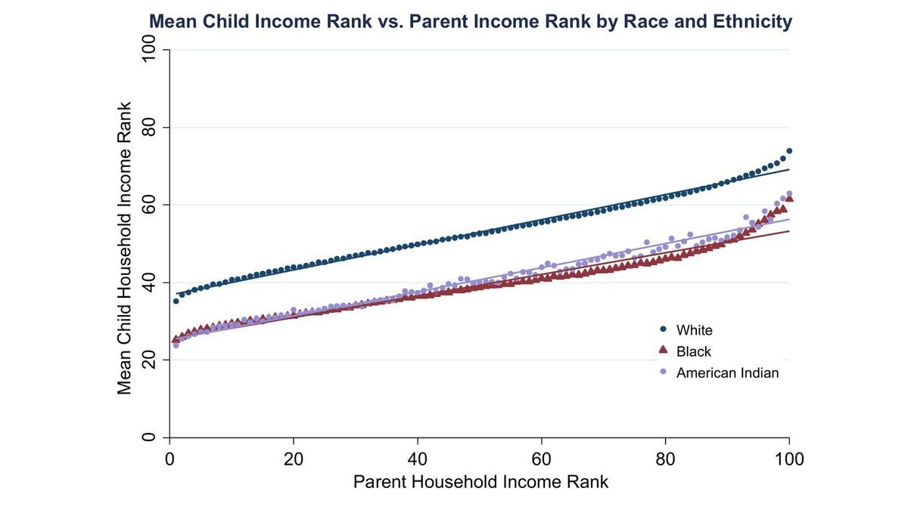
Five groups, five lines
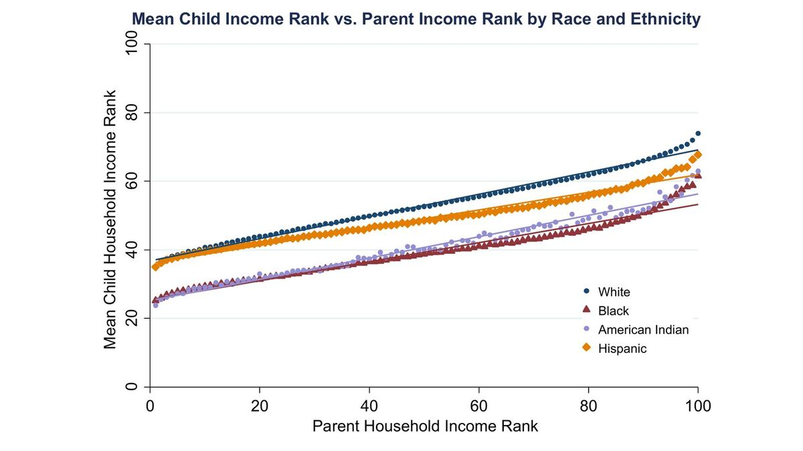
Five groups, five lines
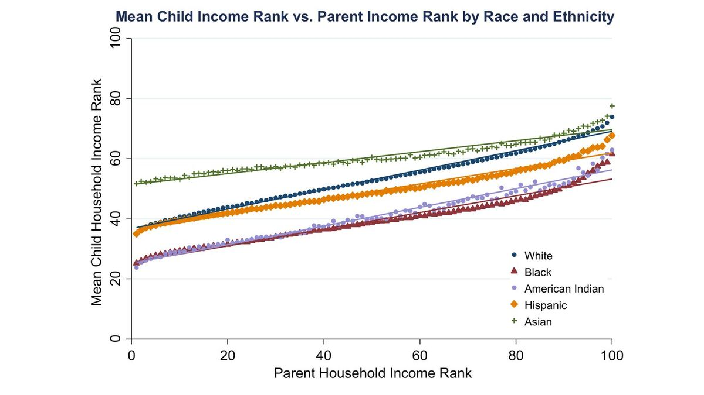
The Asian “exception” is an immigrant story
- Restrict to children whose mothers were born in the U.S. — the Asian line becomes nearly identical to the white line
- Interpretation: high-skilled immigrants often take low-paying jobs on arrival, but bring high education — their kids do well
- Their measured parent income understates the family’s actual advantages
- Groups’ current positions vs. predicted steady states: every group is near its steady state except Hispanics, who are still converging
Same chart, U.S.-born mothers only
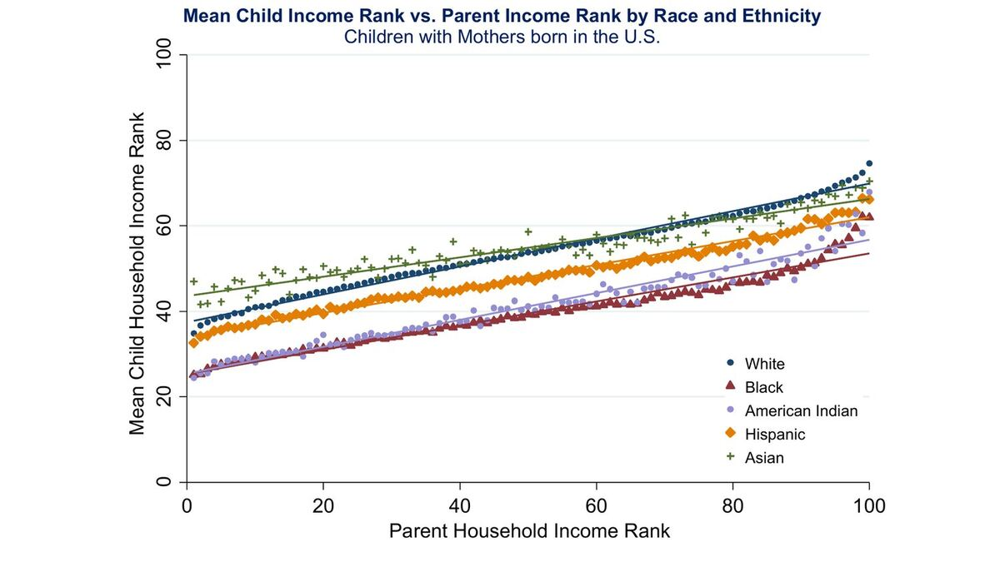
Current position vs. steady state, by group
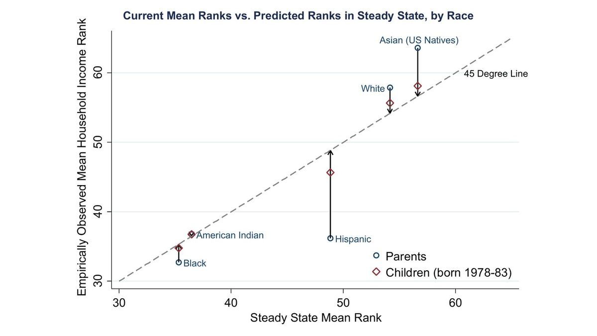
Boys vs. girls
A first cut at the “why”: split by gender
- Everything so far used household income
- Now: individual income — each child’s own earnings, excluding any spouse
- Question: is the Black–white intergenerational gap the same for sons and daughters?
TopHat: What do you expect for women?
Take a Black girl and a white girl raised in families at the same income level. As adults, their own individual incomes are, on average…
- A: about the same
- B: the white woman earns much more
- C: the Black woman earns much more
Male children: the familiar gap
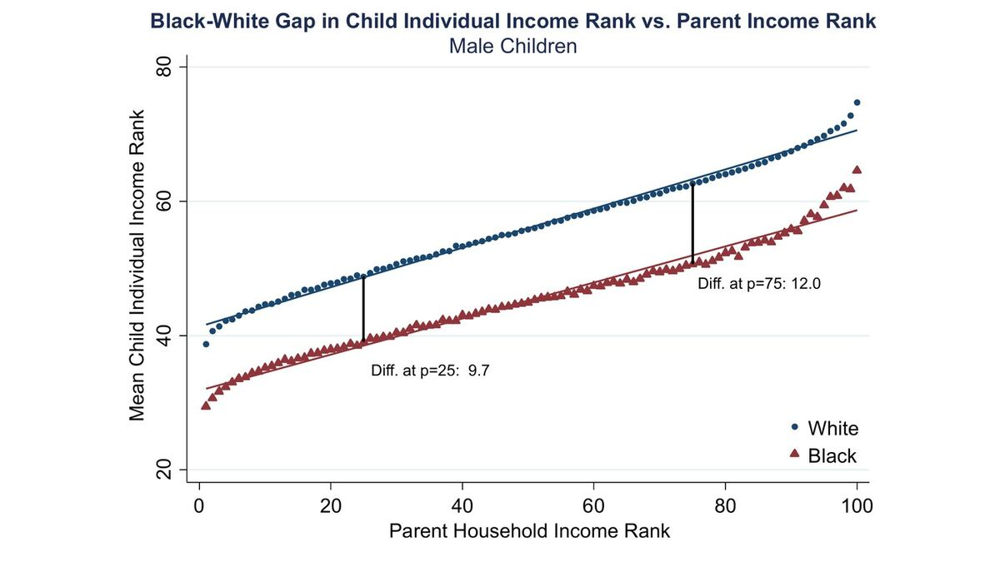
Female children: the gap vanishes
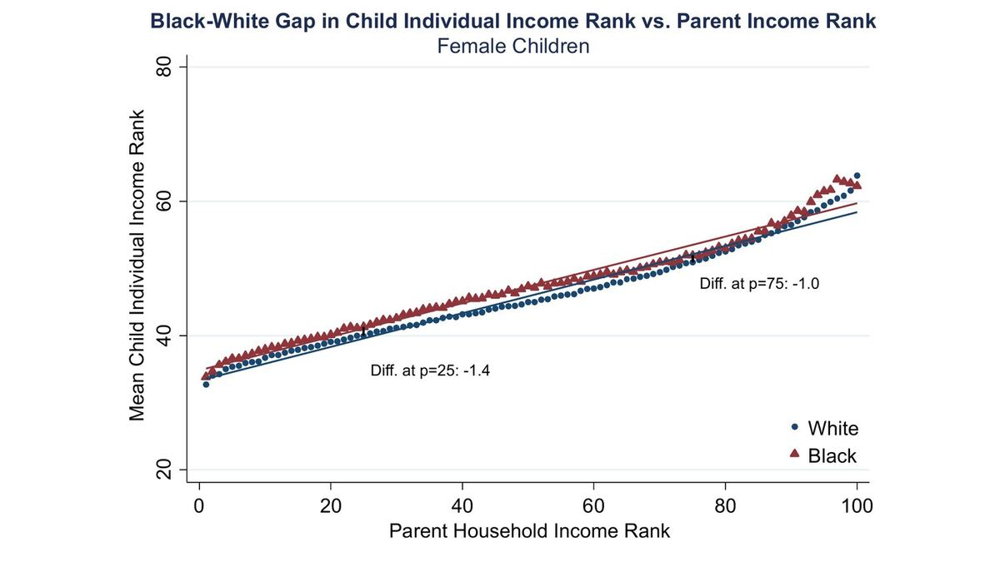
The gap among boys — and among girls
- Male children: familiar picture — Black boys land about 9.7 percentiles lower at p25 and 12.0 lower at p75
- Female children: the gap essentially vanishes — differences of −1.4 at p25 and −1.0 at p75
- Conditional on parent income, Black women earn slightly more than white women
- The Black–white intergenerational gap is overwhelmingly a story about men (Chetty et al. 2020)
Careful: “conditional on parent income” ≠ “on average”
- On average, Black women still earn much less than white women — because they grow up in far lower-income families
- And women’s household incomes in the next generation depend on marriage — so men’s lower mobility still pulls down Black households’ steady state
- No gender gap in mobility does not mean no racial gap for women in the long run
Employment tells the same story
- Only about 55% of Black men raised in the lowest-income families are employed in a given year
- At p25, the Black–white employment gap among men is about 19 percentage points
- Black and white women: nearly identical employment rates conditional on parent income (Black women slightly higher)
Employment: men
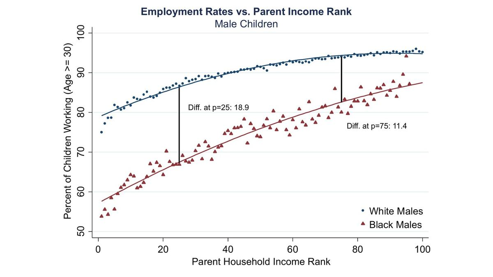
Employment: adding women
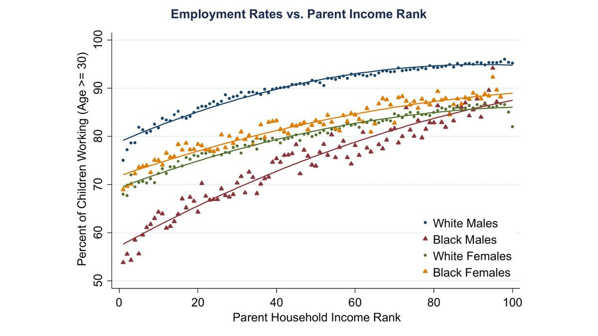
TopHat: One day in 2010
Of Black men who grew up in the lowest-income families in America, what share were incarcerated on a single day — April 1, 2010?
- A: 2%
- B: 8%
- C: 21%
- D: 35%
The answer: 21%
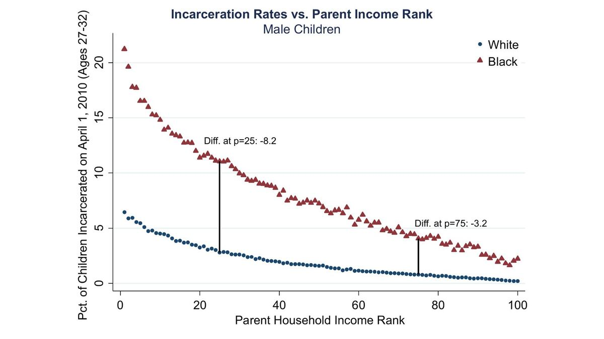
Incarceration
- 21% of Black men raised in the lowest-income families were incarcerated on the day of the 2010 Census (ages 27–32)
- That is one day’s snapshot — not a lifetime rate
- White men’s incarceration also rises at the bottom, but nowhere near that level; women’s rates are far lower for both groups
- Even Black men with no criminal-justice contact are on very different trajectories than white men — incarceration is part of the story, not all of it
Incarceration: women
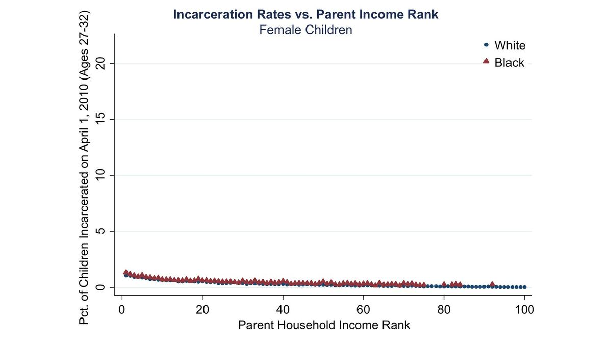
What does not explain the gap
Family-level factors don’t account for it
- Natural suspects: parental wealth, parental education, two-parent vs. single-parent households
- Test: compare Black and white men raised in two-parent families with comparable income, education, and wealth
- Result: Black men still fare substantially worse (Chetty et al. 2020)
- So the drivers must include environmental factors beyond the family → study how gaps vary across places
Neighborhoods: four key results
Recall the map for all men
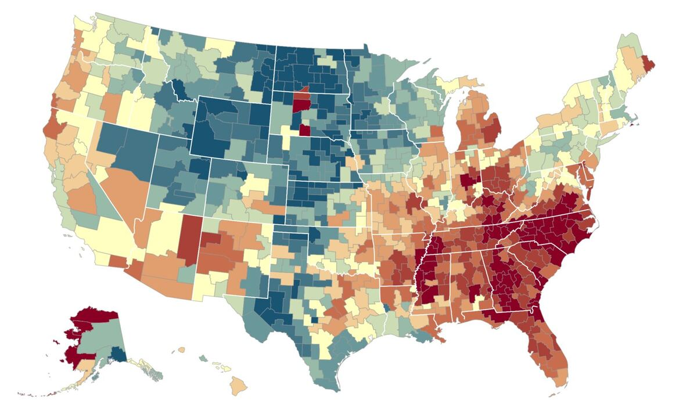
Average income rank for men whose parents earned about $25,000 (25th percentile), by commuting zone. Source: Chetty et al. (2020)
Two Americas: the same map, Black men only
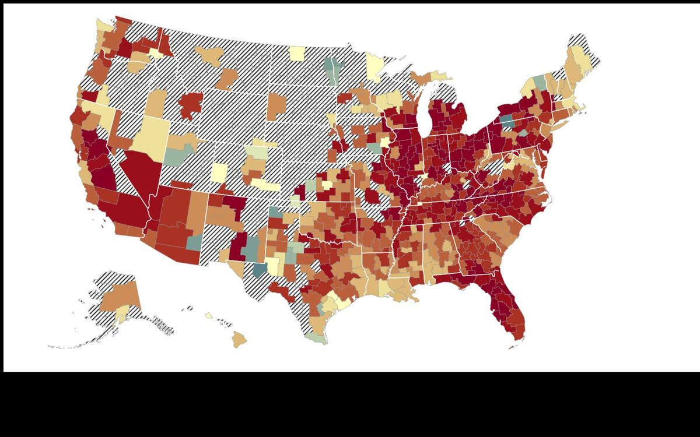
Same measure and color scale; hatched areas have insufficient data. Source: Chetty et al. (2020)
Two Americas: the same map, white men only
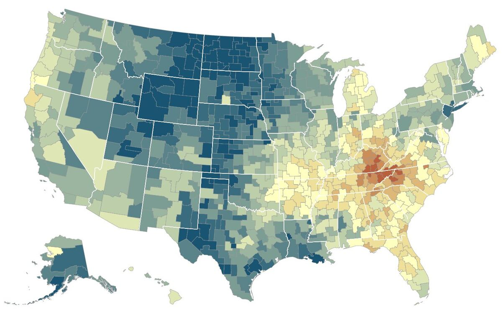
Same measure and color scale as the previous map. Source: Chetty et al. (2020)
Reading the two maps together
- Same color scale on both maps — and they barely overlap
- The best commuting zones for Black men have upward mobility comparable to the worst ones for white men
- Examples: raised poor in Boston, Black men average $24k, white men $31k; San Francisco $19k vs. $31k
- There is essentially no place in America without a substantial Black–white gap in upward mobility
Zoom in: from regions to neighborhoods
- Commuting zones show broad regions — but Black and white families live in different neighborhoods within them
- So zoom to Census tracts (~4,200 people)
- Chetty et al. (2020) summarize the tract-level evidence in four key results
Result 1: the gap is everywhere
- Controlling for parental income, Black boys have lower earnings than white boys in 99% of Census tracts in America
- Even when Black and white boys grow up in the same neighborhood, attend the same schools, with parents earning similar amounts — the gap remains
Result 2: “good” neighborhoods help — but widen the gap
- Both Black and white boys do better in low-poverty, higher-rent tracts with better schools
- But nearly every marker of a “good” neighborhood — low poverty, test scores, college graduates, two-parent share — predicts more improvement for white boys than Black boys
- So the Black–white gap is larger in affluent neighborhoods than in disadvantaged ones
What predicts good outcomes — for whom
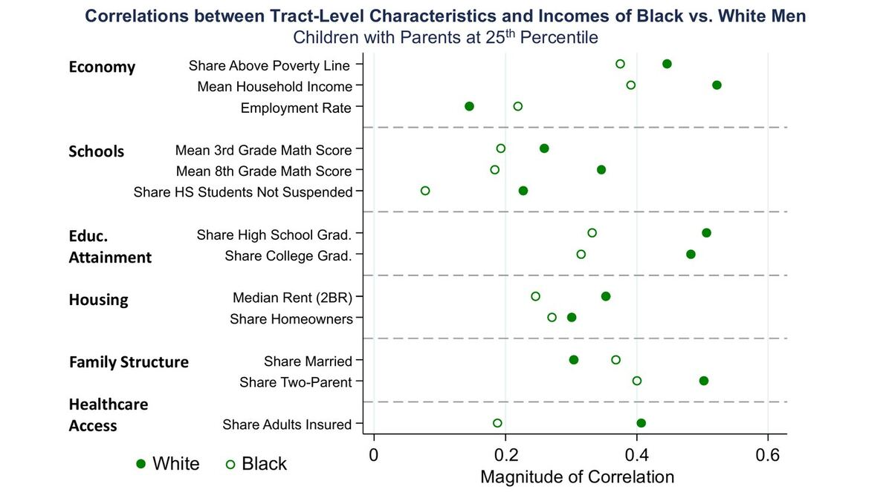
The gap widens as tract poverty falls
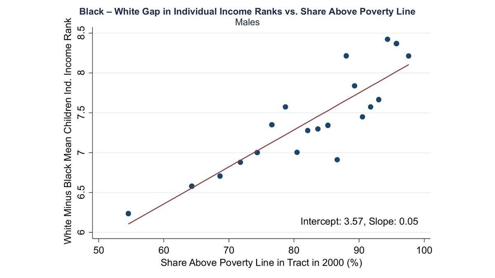
Result 3: what predicts better Black outcomes
- Within low-poverty areas, two factors predict better outcomes for Black boys and smaller gaps:
- Father presence: Black men raised in tracts where more Black fathers are present have much higher employment rates
- Less racial bias: areas scoring lower on a Google-search-based index of racial animus have better outcomes for Black men
- Descriptive, not proven causes — but consistent with discrimination and role-model channels
Father presence and the employment gap
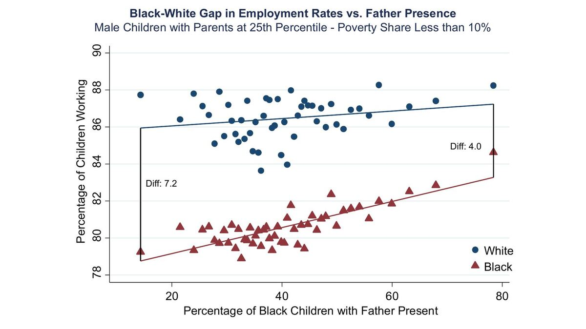
These exposure effects are race- and gender-specific
- Black father presence in a tract predicts outcomes for Black men — but is essentially unrelated to outcomes for white men in the same tract
- It is also unrelated to outcomes for Black women
- So this is not just a proxy for “better schools” or other broad amenities — the relevant environment differs by race and gender
Within Black families: men respond, women don’t
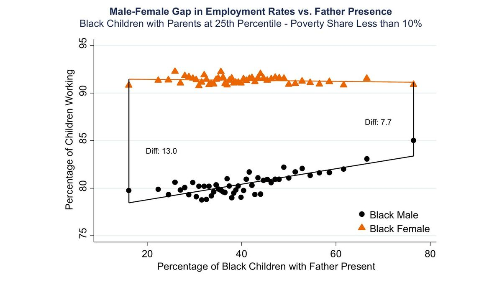
Result 4: these are causal exposure effects
- Reuse the movers design from Part 1: children who move to a better area at a younger age gain more
- Black boys who move earlier to places where Black men do well have better outcomes — in proportion to years of exposure
- Moving to a place where white men do well does not deliver the same gains
- The Black–white gap itself is causally shaped by childhood exposure to neighborhoods
The catch: those neighborhoods barely exist
- Define a “good” tract: poverty rate < 10% and father presence above 50% among children of the child’s own race
- 62.5% of white children grow up in such tracts
- 4.2% of Black children do — while 66% of Black children grow up in high-poverty, low-father-presence tracts
- Black boys thrive where resources are good and race-specific factors are favorable — but almost no American neighborhood offers both
Almost no neighborhoods offer both
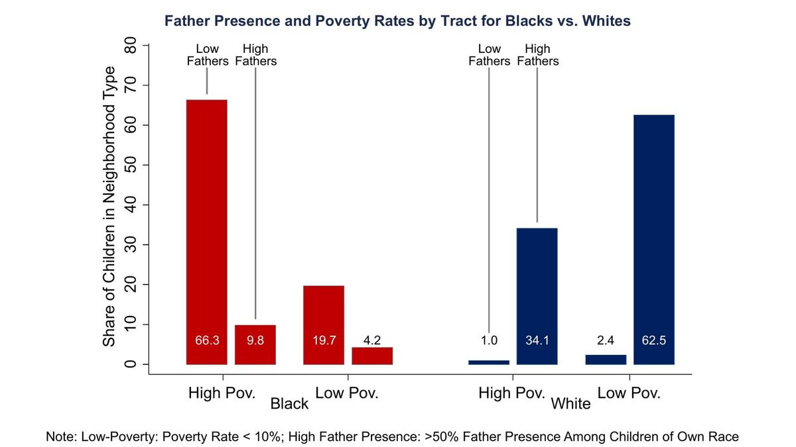
What it means for policy
Why many proposed policies fall short
- Cash transfers, tax credits, minimum wages: raise incomes now, but the dynamics pull the next generation back — no persistent effect unless mobility rates change
- Reducing residential or school segregation: can raise the level of outcomes for both groups — but the gap persists in 99% of tracts, so integration alone may not narrow it
What might actually narrow the gap
- Policies that cut within neighborhoods and improve environments for specific subgroups — especially Black boys and men:
- Mentoring programs for Black boys (Heller et al. 2015)
- Efforts to reduce racial bias (Devine et al. 2012)
- Actual integration within schools — contact, not just co-enrollment
- Criminal justice reform
- Developing and evaluating such programs is a major open frontier
Recap
- If mobility were race-invariant, a 25-percentile gap would shrink to ~3 in two generations — persistence means mobility differs by race
- Steady-state gap (19.2) ≈ today’s gap (~21): the disparity is self-reproducing, not transitory
- The intergenerational gap is a story about boys: employment and incarceration gaps are enormous; girls’ gap is ~0 conditional on parent income
- Family-level factors don’t explain it; neighborhoods matter, but the gap survives in 99% of tracts and widens in affluent ones
- Only 4.2% of Black children grow up in low-poverty, high-father-presence tracts
Exposure to the U.S. justice system
Today’s question
When a parent is arrested, charged, or locked up, a child’s life changes too. How many children does the U.S. justice system reach — and could better predictions make its decisions better?
- First half: counting children’s exposure (Finlay, Mueller-Smith, and Street 2023 — today’s reading)
- Second half: machine learning as a tool for improving justice decisions
- We end with a hard question: what does “fair” mean for an algorithm?
Where we’re headed
- Why counting children touched by the justice system is hard — and how linked survey–administrative data solves it
- The headline rates: charges, felonies, incarceration by age 18
- Method spotlight: machine learning, taught through bail hearings (Kleinberg et al. 2018)
- Predictive policing, briefly
- The fairness debate — genuinely two-sided
From income gaps to the justice system
Where last class pointed

Source: Chetty, Hendren, Jones, and Porter (2020).
What that figure showed
- The Black–white income gap is concentrated among men (Chetty et al. 2020)
- One outcome stood out: incarceration measured on a single day (April 1, 2010)
- Among men raised in families at the 25th percentile, the Black incarceration rate was about 8 percentage points higher than the white rate
- Among Black men from the very poorest families: roughly 1 in 5 incarcerated that day
Today we flip the lens to children
- Justice-system contact is usually measured for defendants
- But arrests, charges, and incarceration reach into households: lost income, instability, stigma
- Question 1: how many children are touched, and which children?
- Question 2: can the decisions that produce this exposure be improved?
Counting children’s exposure
Why counting is surprisingly hard
- Surveys: small samples; usually ask only about parental incarceration, not arrests or charges; stigma leads to underreporting
- Administrative records: near-complete for defendants, but say nothing about the defendant’s children
- No single dataset contains both the justice event and the family
- Sound familiar? The Opportunity Atlas faced the same problem for income
The data: CJARS linked to the Census
- CJARS — the Criminal Justice Administrative Records System (Finlay and Mueller-Smith 2020): millions of arrest, charge, conviction, and incarceration records, harmonized across agencies nationwide (Univ. of Michigan + Census Bureau)
- Linked, anonymized, to billions of federal tax, household survey (2000/2010 Census and ACS), and program participation records
- The household rosters reveal which children live with each adult in the criminal records — exposure through biological parents or co-resident adults
- Same recipe as the Atlas — link survey and administrative big data — applied to a new domain (Finlay et al. 2023)
TopHat: Guess before the reveal
By their 18th birthday, what share of American children have had a parent charged with a crime?
- A: about 5%
- B: about 15%
- C: about 25%
- D: about 40%
Exposure is far more common than we thought
For children born 1999–2005, by age 18:
- Parent charged with any crime: ~39%
- Parent with a felony conviction: ~18%
- Parent in prison: ~9%
Roughly two in five children — parental justice contact is a mainstream feature of American childhood, not a rare event.
Exposure by race and by income
![Two-panel figure. Panel A is a grouped bar chart of exposure by age 18 for five race and ethnicity groups: any-charge exposure is 62 percent for Black children and 60 percent for American Indian children, versus 45 percent for Hispanic, 32 percent for white, and 17 percent for Asian children, and parental prison exposure is 20, 15, 11, 6, and 2 percent respectively. Panel B plots exposure against parent household income rank, with any-charge exposure peaking above 60 percent near the bottom of the income distribution and falling below 10 percent at the top.](img/finlay-exposure-by-race-income.jpg)
Source: Finlay, Mueller-Smith, and Street (2023).
Exposure differs sharply by race
- Charge exposure exceeds 60% for Black and Native American children — nearly double the white rate (32%)
- Parental prison exposure: 20% of Black and 15% of Native American children, vs. 6% of white children — roughly triple
- The ranking of exposure (any charge > felony > incarceration) is the same for every group — the levels differ dramatically
- Because white children are the largest group, they are still the largest number of exposed children
Exposure differs sharply by income
- Steep income gradient: the lower the household’s income, the higher the child’s exposure to every justice event
- Among children from the lowest-income households, any-charge exposure also exceeds 60% (panel B)
- Race gaps remain within income groups — Black children at a given household income are still more exposed than white children at the same income
- Echo of last class: family income alone does not explain racial gaps
Exposure varies across places too
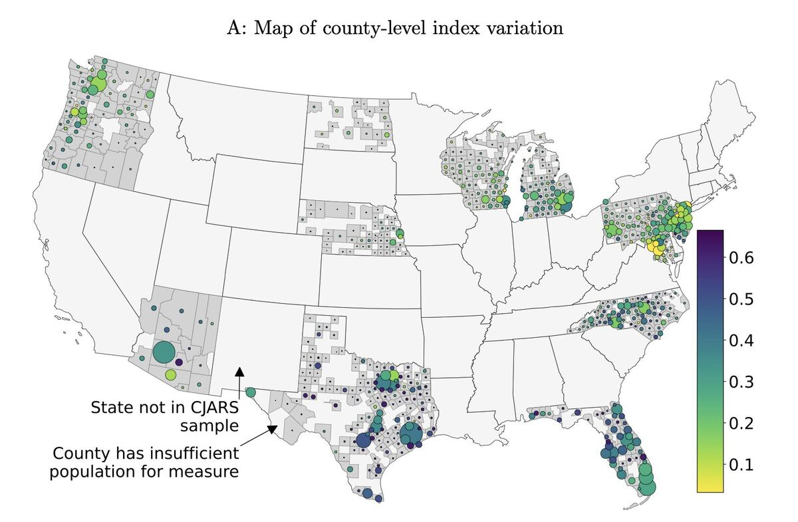
Source: Finlay, Mueller-Smith, and Street (2023).
Reading the county map
- Exposure varies enormously across counties, even within the same state
- Grey areas: states not yet in the CJARS sample, or counties too small to measure — even “big” administrative data takes years to assemble
- Place, race, and income all shape which childhoods the justice system touches
Why this matters for opportunity
- Children with justice-exposed parents fare worse on schooling, adult income, and their own justice contact
- Careful: these are correlations — the disadvantages that predict a parent’s arrest also predict child outcomes directly
- But the sheer scale means the justice system is a first-order part of the environment children grow up in
- One policy handle: make the system’s decisions better — our second half
The bail decision
Thousands of small, fast decisions
- After an arrest, a judge quickly decides: hold the defendant in jail until trial, or release them
- Legal objective: minimize the risk of failure to appear at trial
- Stakes run both ways: jail can cost a job, housing, custody of kids; wrongful release risks missed trials and new crime
- At its core this is a prediction problem — decided by a human in minutes
Are human decisions biased? Evidence 1: resumes
- Bertrand and Mullainathan (2004): 5,000 fictitious resumes sent to 1,300 real job ads in Boston and Chicago
- Identical credentials; only the name randomized — white-sounding vs. Black-sounding
- White-sounding names received about 50% more callbacks
- A randomized audit study: discrimination conditional on credentials
Evidence 2: Airbnb hosts
- Edelman et al.: fictitious guest requests to real listings; names randomized, no profile photos
- Hosts accepted guests with white-sounding names significantly more often
- About 40% of the rejecting listings sat vacant on the requested dates
- Turning away Black guests cost hosts roughly $65–100 each — bias persists even when it is expensive
Evidence 3: decision fatigue
- Danziger et al.: Israeli parole hearings, about 20 cases per judge per day, heard in near-random order
- Right after a meal break: parole granted about 60% of the time
- Just before the next break: close to zero
- (Later work debates how much reflects case scheduling — but the broader point stands: human cognition is limited, hungry, and noisy)
Method spotlight: machine learning
What machine learning is
- Algorithms that learn a prediction rule from data instead of being hand-programmed
- Input: many predictors (age, current charge, prior record, …)
- Output: a predicted probability of an outcome for each new case
- ML answers “who is risky?” — a prediction question
- It does not answer “what would jailing this person cause?” — a causal question (more on this next class)
Kleinberg et al. (2018): the setup
- About 750,000 bail cases from New York City, 2008–2013
- The algorithm sees only what the judge sees at the hearing — the rap sheet, the current charge
- Outcome data: whether released defendants failed to appear at trial
- Goal: compare the machine’s risk ranking to judges’ actual jail-or-release choices
Step 1: split your data
- Lock box: a slice set aside, untouched, to check the final model
- Training set (~80% of the rest): the data used to fit the model
- Hold-out set (~20%): used to evaluate the model — data it has never seen
- Never grade a model on the data used to fit it: that test is circular and the model will always look good
The enemy: overfitting
- Give a model enough variables and it can fit its own training data almost perfectly
- But then it is fitting the noise, not the signal
- Overfit models look brilliant in-sample and fall apart on new defendants
- The only score that counts is out-of-sample performance
TopHat: overfitting check
A model predicts its training data with 99% accuracy. What do we know about how it will predict next year’s cases?
- A: It will be about 99% accurate
- B: It will do worse — possibly far worse
- C: It will do better — more data by then
- D: Nothing, until we test it on data it has never seen
The workhorse: decision trees
- Ask: which single variable, if we split the data on it, best separates those who appear at trial from those who don’t? Split there first (say, felony vs. misdemeanor charge)
- Within each branch, repeat: split again on the next most predictive variable
- Each final “leaf” gives a predicted risk for defendants who match that path
- Simple and interpretable — the building block of modern ML methods
How deep should the tree grow?
- Deeper tree = more flexibility = more risk of overfitting
- 5-fold cross-validation: split training data into 5 folds; fit on 4, measure error on the 5th; rotate
- Out-of-sample error falls, bottoms out (near depth 35 here), then rises — that turn is overfitting appearing
- In-sample error falls forever — which is exactly why it is the wrong guide
Machine vs. judge
The machine’s decision rule
- Every defendant gets a predicted probability of failing to appear
- The rule is a simple threshold: jail above it, release below it
- Slide the threshold to match any jail rate you like — so comparisons with judges are apples to apples
- All evaluation happens on the hold-out sample
What judges actually do
- Predicted risk tracks observed failure-to-appear closely — the model works out of sample
- Yet judges release about half of defendants whose predicted risk exceeds 60%
- And judges jail about 30% of the lowest-risk defendants (predicted risk under 20%)
- Misranking in both directions
The headline result
- Re-sort: jail the predicted-riskiest, release the predicted-safest
- Crime (failures to appear) falls about 25% with no change in how many people are jailed
- Or: the jail population falls about 42% with no increase in crime
- Fewer crimes, or thousands fewer people behind bars — from the same information judges already had
Why does the machine win?
- Decision fatigue and time pressure — the parole study in miniature, thousands of times a day
- Judges weight vivid but weakly predictive cues — how someone carries themselves in the courtroom
- The model pools information from hundreds of thousands of cases and never has a bad afternoon
- Judges are not bad people; they are people
Replace judges? No — inform them
- Almost no one argues for fully automated bail
- The realistic design: show the judge a risk score; the judge may deviate from it
- Keeps human judgment for what the data miss; disciplines the part the data measure well
- Several jurisdictions already use tools like this
Predictive policing
Crime clusters in place and time
- Look at burglaries within 0.1 miles of each other: the distribution of time gaps between them spikes at 0–1 days
- A burglary today strongly predicts another burglary on the same block tomorrow
- Prediction opportunity: direct patrols toward emerging hot spots rather than yesterday’s map
Listening for crime: ShotSpotter
- Rooftop microphones detect the audio signature of gunfire — a machine learning classifier for sound
- Useful because only a small fraction of gunshots is ever reported to police
- Gives high-frequency data on where gun crime is actually occurring
- Individual-level prediction (school records, social networks) is also possible — and much more ethically fraught
The fairness debate
TopHat: Where do you land?
Should bail judges be shown an algorithm’s risk score for each defendant?
- A: Yes — it prevents crimes and needless jailings
- B: Only with regular audits for racial disparities
- C: No — people shouldn’t be judged by other people’s behavior
- D: Genuinely unsure
Concern: judged by your group, not your acts
- Prediction treats you according to the behavior of people who share your attributes
- Dropping race from the model does not fix this: correlated proxies — like ZIP code — pull it right back in
- Result: more policing or jail for things you haven’t done
- A serious ethical cost, not a technicality
The other side: discarding information has costs too
- The status quo is not neutral: we just saw biased, noisy human decisions
- Refusing good predictions means more crime and more people needlessly jailed — burdens that also fall unequally
- The real comparison is not “algorithm vs. perfect justice” but “algorithm vs. judges as they actually are”
- Reasonable people weigh process fairness and outcomes differently
An open research frontier
- A growing “algorithmic fairness” literature makes fairness criteria precise and quantifies the tradeoffs
- Uncomfortable result: reasonable definitions of fairness can conflict — a society must choose among them
- The economist’s job: make the tradeoffs explicit instead of leaving them buried inside a black box
Recap
- Linked CJARS–Census data: by age 18, 39% of children have had a parent charged with a crime, 18% a parent with a felony conviction, 9% a parent in prison — with stark race and income gradients (Finlay et al. 2023)
- Bail is a prediction problem, and human predictions are biased and noisy (resume and Airbnb audits, decision fatigue)
- ML discipline: training vs. hold-out data and cross-validation guard against overfitting
- Kleinberg et al. (2018): crime −25% at the same jail rate, or jailing −42% at the same crime rate
- The fairness debate has real arguments on both sides
Prediction, overfitting, and the limits of big data
Today’s question
When a model fits the data beautifully, how do we know it will work tomorrow?
- Last class we let an algorithm make predictions about people
- Today: what makes a prediction good, and how prediction models fail
- The cautionary tale: Google Flu Trends
Where we’re headed
- How public health actually detects an outbreak — and why it is slow
- Google Flu Trends: a genuinely great idea (Ginsberg et al. 2009)
- Overfitting and the fix: out-of-sample validation
- The collapse of 2013 (Lazer et al. 2014)
- Prediction vs. causation: which question are you asking?
Detecting an outbreak
Public health in the era of big data
- Public health and epidemiology try to improve health by:
- Changing individual behavior — smoking, exercise, vaccination
- Improving population health — water quality, slowing contagion
- Big data is entering the field through one classic question: can we forecast an epidemic before it arrives?
Why speed is everything
- Contagious diseases spread exponentially, not linearly
- One week of delay does not cost you one week of cases — it can double them
- Huge returns to acting early: closing schools, shipping vaccine, staffing hospitals
- So the value of surveillance data is mostly about timeliness
The traditional system
- CDC’s outpatient surveillance network (ILINet): a few thousand volunteer clinics report the share of visits for influenza-like illness
- Strengths: it is a real measurement of real patients — ground truth
- Weaknesses:
- Reported with a one- to two-week lag
- Small samples → only nine broad regions, not neighborhoods
Surveillance in action: EVALI, 2019
- Autumn 2019: clinicians started admitting young, healthy patients with severe lung injury
- Ohio hospitals were among them; the Columbus Dispatch ran the story in November 2019
- CDC named it EVALI — e-cigarette or vaping product use–associated lung injury
- By mid-October 2019: 1,479 confirmed cases and 33 deaths
What surveillance found
- 82% of hospitalized EVALI patients reported using THC-containing products
- Vitamin E acetate, an additive in illicit THC cartridges, was the common thread
- Cases peaked the week of September 15, 2019, then fell steadily
- Note the pattern: the clinical reporting system was slow, but it was the thing that identified the actual cause
EVALI case rates and e-cigarette use, by state marijuana policy
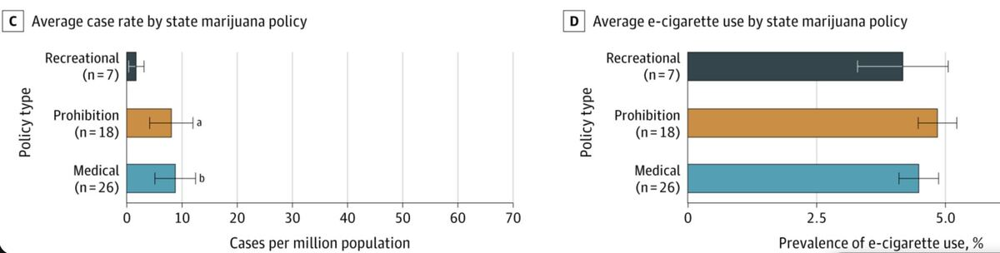
What the EVALI chart suggests
- States with legal recreational markets had lower case rates — even though vaping rates were the same
- Suggestive, not causal: states differ in many ways at once
Google Flu Trends
A very good idea
- Ginsberg et al. (2009), published in Nature, propose a new data source: Google search queries
- Logic: people search “how to treat a cough” or “antibiotics” before they ever see a doctor
- Search data are:
- Immediate — no reporting lag
- Fine-grained — available by state, even city
- Google knew who was searching what, in real time, everywhere
What is being predicted, and with what
- Outcome (the truth): CDC influenza-like illness rates
- Weekly, 9 U.S. regions, 2004–2007
- 128 weeks × 9 regions = 1,152 observations
- Predictors: weekly Google search counts for 50 million distinct search terms
- Notice the shape of that dataset
“Wide” data
- Long data: many rows, few columns (the Opportunity Atlas — 20.5 million kids, a handful of variables)
- Wide data: more variables than observations
- Here: 50,000,000 candidate predictors, 1,152 observations
- Ordinary regression simply breaks — you can fit 1,152 data points perfectly with 1,152 variables
Overfitting
- Overfitting: a model so flexible it fits the noise in your sample, not the signal in the world
- A perfectly fit model has zero error in your data and tells you nothing about the next observation
- The tell: fit is spectacular in-sample, terrible out-of-sample
- With 50 million predictors, overfitting is not a risk — it is the default
TopHat: Two models of the same flu data
Model A explains 99% of the variation in the data used to build it. Model B explains 75%. Which would you deploy?
- A — it fits better
- B — 99% smells like overfitting
- Not enough information
- Hold your answer; the next section is the actual test
Method spotlight: out-of-sample validation
The fix: never grade your own homework
- Core idea: use different data to build the model than to judge it
- If you estimate and evaluate on the same rows, the exercise is circular — of course it fits, you chose it to fit
- Standard practice splits the data into pieces with different jobs
Three jobs for your data
| Piece | Job |
|---|---|
| Training set | Estimate the model (typically ~80%) |
| Validation set | Tune choices: how many predictors, how complex |
| Hold-out / “lock box” | Touched once, at the end, to report honest performance |
- The lock box is set aside before you look at anything
- Kleinberg et al.’s bail study used exactly this structure
Cross-validation
- Problem: splitting the data wastes data
- k-fold cross-validation: split the training data into k pieces (say 5)
- Estimate on 4 folds, evaluate on the 5th
- Rotate, so every fold gets a turn as the evaluator
- Average the 5 prediction errors
- Every row helps train and helps evaluate — just never at the same time
The two error curves
- In-sample error falls forever: add a variable, fit the same rows better. Always.
- Out-of-sample error is U-shaped: it falls, hits a minimum, then rises
- The minimum is the model you want. Everything to the right is overfitting.
- In-sample fit is the wrong notion of prediction error — full stop
GFT step 1: rank 50 million terms
- Run one regression per search term — 50 million separate regressions of CDC flu rates on that term’s search volume
- Compute how well each term’s predictions correlate with CDC data across the nine regions
- Keep the top 100 terms
- The list includes “cough” and “antibiotics” — and also “high school basketball” and “oscar nominations”
GFT step 2: how many terms?
- Add up search volume across the top n terms, varying n from 1 to 100
- Judge each choice of n on a separate set of later weeks — data not used to rank the terms
- Best fit: the sum of the top 45 queries
- This is out-of-sample validation choosing a tuning parameter
Out-of-sample fit peaks at 45 queries
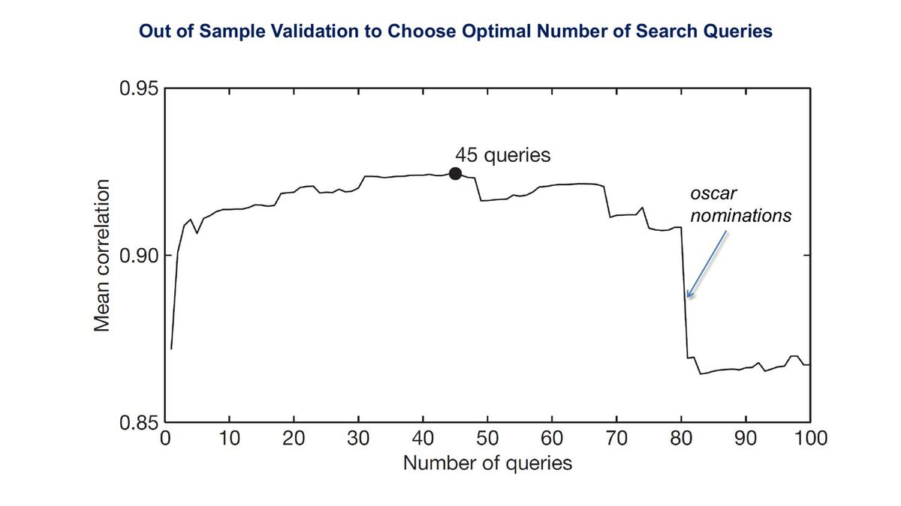
Source: Ginsberg et al. (2009)
Why “oscar nominations” is a warning light
- Nothing about the Oscars causes influenza
- It correlates because Oscar season and flu season are both winter
- A term like that predicts fine — until the calendar relationship drifts
- Black-box fit is easy; a model with a sensible mechanism is more likely to keep working
GFT step 3: the real test
- Final step: forecast the 2007–08 flu season — data that did not exist when the model was built
- Predictions tracked CDC ILI rates closely, with correlations around 0.97 across the nine regions
- And it ran one to two weeks ahead of CDC’s official reports
- Genuinely impressive. It made the cover of Nature.
Forecasting a season the model never saw
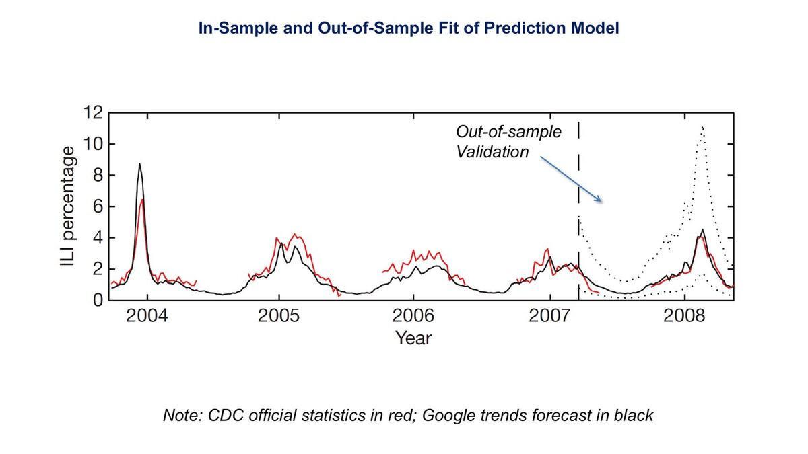
Source: Ginsberg et al. (2009). CDC in red; Google forecast in black
The collapse
Then it broke
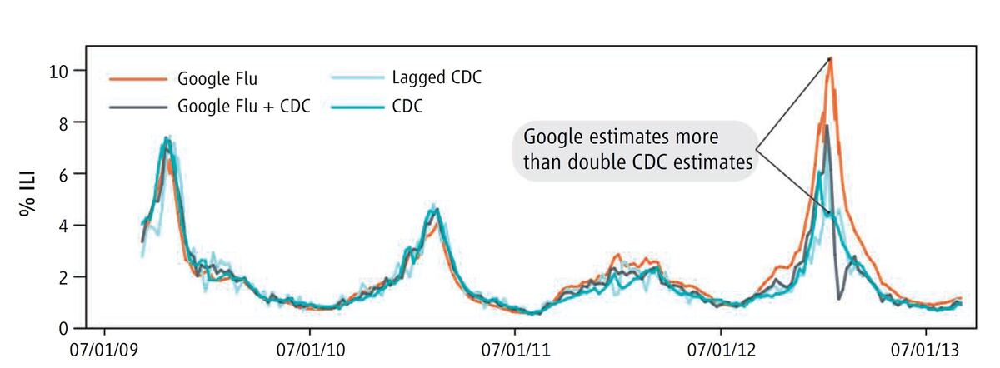
Google Flu Trends vs. CDC influenza-like-illness rates, 2009–2013. Source: Lazer et al. (2014)
What the picture shows
- Starting in 2011, Google Flu Trends overshot CDC in 100 of 108 weeks
- February 2013: Google’s estimate was more than double the actual CDC rate
- Lazer et al. (2014) diagnosed the failure simply — by extending the out-of-sample window to 2013
- Note the pale blue line: lagged CDC data alone did about as well
Why did it break?
- Google changed the search engine, not the flu
- Autocomplete began suggesting search terms as you typed
- After a search for “fever” or “cough,” Google started recommending related diagnoses to click
- More flu searches per sick person → the model read the same epidemic as much bigger
- The model was never re-estimated, so the drift compounded
The deeper failures
- No ground truth check. Search data measure searching, not sickness.
- The data-generating process was not stable. Google’s own product team kept changing it.
- Big data hubris: treating volume as a substitute for measurement and theory (Lazer et al. 2014)
- The obvious benchmark — what CDC reported three weeks ago — was never taken seriously
TopHat: What was the single best fix?
Google Flu Trends is overshooting badly. You get one change. Which?
- Add more search terms
- Re-estimate the model on recent data every season
- Combine the search index with lagged CDC data
- Shut it down and wait for CDC
Lessons from the parable
- Big data has real potential for prediction — this idea was good
- But big data is not a substitute for ground truth
- Good thing CDC never shut down its clinic reporting network
- Models need judgment, not just fit: prefer mechanisms you can defend
- Google Flu Trends stopped publishing estimates in 2015
Prediction vs. causation
Two different questions
| Question | Tool | Example |
|---|---|---|
| What will happen? | Prediction | Which defendants skip trial? |
| What happens if I act? | Causation | Does jail reduce future crime? |
- Everything in Part 1 and Part 2 was causal: MTO, the class-size discontinuity, teacher value-added
- Today’s material is the other column
Umbrellas and rain dances
- Kleinberg et al. (2015) put it this way:
- Umbrella problem: should I carry one? I only need to predict rain. The umbrella’s effect is known.
- Rain dance problem: will dancing bring rain? Only a causal effect answers it.
- Many important policy problems are umbrella problems in disguise
When prediction is genuinely enough
- Which neighborhoods will see a burglary tonight → where to patrol
- Which patients are so sick that surgery will not extend life → which operations are futile
- Which regions are about to see a flu surge → where to ship vaccine
- In each case the action’s effect is known; the open question is who and where
When prediction is not enough
- “Kids from this ZIP code have low incomes” → do not conclude that moving them raises income
- That is a causal claim, and it needed the Moving to Opportunity experiment to settle
- A model can predict outcomes perfectly and still be useless for policy
- Ask yourself: am I choosing whom to act on, or whether the action works?
Predictions change when you use them
- The flu model broke because the world it measured changed
- Policy makes this worse: acting on a prediction changes the behavior you were predicting
- Predictive policing sends officers somewhere → arrests rise there → the data say that place is dangerous
- A measure that becomes a target stops being a good measure
TopHat: Prediction or causation?
For each question, would you build a prediction model or estimate a causal effect?
- Which students are most likely to drop out this year?
- Does a smaller class raise test scores?
- Where should we place flu vaccine before December?
- Does moving to a low-poverty neighborhood raise a child’s earnings?
Wrapping up Part 3
Part 3 recap
- Race and opportunity: gaps are driven by intergenerational dynamics, and they differ sharply by gender and by place (Chetty et al. 2020)
- Justice system exposure: millions of children have a parent arrested or incarcerated; the exposure itself has consequences (Finlay et al. 2023)
- Algorithms in decisions: machine predictions can outperform human judgment — and can encode existing disparities
- Today: what makes a prediction trustworthy, and where prediction stops being the right question
The through-line of this course
- Description tells you where to look (Part 1’s maps)
- Prediction tells you who to act on (today)
- Causal inference tells you whether the action works (everything else)
- Confusing the three is the most common mistake in applied data work
Project 2 is due this week
- Project 2 — Class size and regression discontinuity — due Wednesday, October 14, 2026
- Submit on Carmen; late work follows the syllabus policy
- Office hours: Tuesdays 2:00–3:00 p.m., sign up via Calendly (in person at Bricker 260 or via Zoom, select when you sign up)
- The in-class quiz on Project 2 is next class — bring what you learned, not your file
Next time
- New part: Health
- How long do Americans live, and how much does income change that?
- Method: hazard and survival models — estimating life expectancy from mortality rates
- Reading: Hollingsworth, Karbownik, Thomasson, and Wray (2024), The Gift of a Lifetime
- Quiz 2 on Project 2 at the start of class